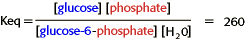

Energy, Enzymes, and Catalysis Problem Set
Problem 13 Tutorial: Equilibrium constant for hydrolysis of glucose-6-phosphate
The equilibrium constant for the reaction, glucose 6-phosphate + water glucose + phosphate, is 260. What can you conclude about this reaction:
The equation for the chemical reaction described in this problem is:
This is a hydrolysis reaction. The glucose-6-phosphate is hydrolyzed to the glucose and phosphate. Biological hydrolysis reactions are almost always spontaneous (exergonic).
The balance between the forward and reverse reactions is known as the chemical equilibrium, which is defined as the ratio of the concentration of products and reactants at equilibrium when there is no further change in concentrations.
For this reaction, equilibrium favors product formation.

The products of glucose and phosphate are at a lower energy level than the reactants. Since Keq > 1, this is a spontaneous (exergonic) reaction starting with glucose-6-phosphate.


Department of Biochemistry and Molecular Biophysics
University of Arizona
Revised: October 2004
Contact the Development Team
http://www.biology.arizona.edu
All contents copyright © 1996. All rights reserved.